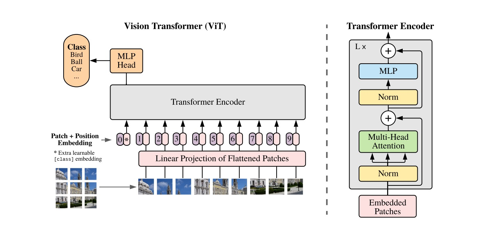
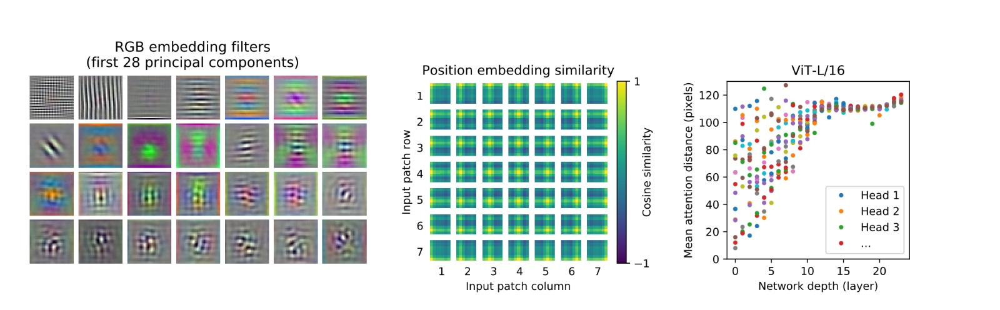
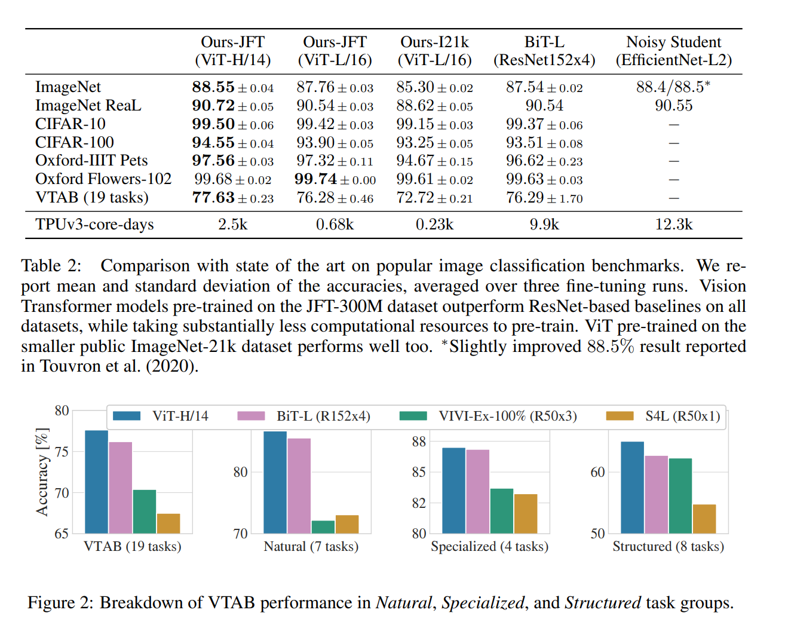
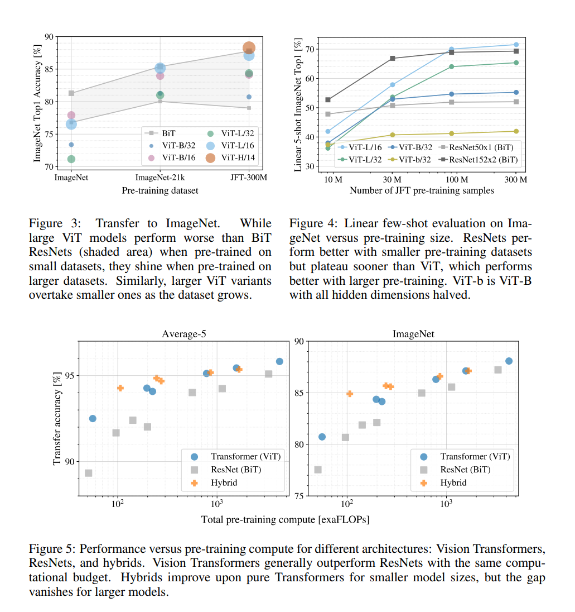

An Analysis of "An Image is worth 16X16 Words: Transformers for Image Recognition at Scale"
This groundbreaking paper represents a significant advancement in computer vision research. Through the introduction of the Vision Transformer (ViT), an innovative application of the Transformer architecture, the authors have redefined the landscape of image recognition. This departure from the conventional utilization of convolutional neural networks (CNNs) marks a paradigm shift, challenging the longstanding dominance of CNNs in the field. The study not only showcases the ViT's capacity to achieve state-of-the-art results in image classification tasks but also emphasizes its efficiency and scalability in comparison to traditional CNNs. This finding unveils new possibilities for advancing computer vision and underscores the transformative potential of harnessing Transformer models beyond natural language processing, extending their impact across diverse domains.
Introduction
In the realm of Artificial Intelligence and Machine Learning, the Transformer architecture has revolutionized Natural Language Processing (NLP). However, its application in the field of computer vision has been relatively limited, primarily augmenting or partially substituting components in convolutional neural network (CNN) structures. This paper challenges this norm by demonstrating the efficacy of a pure Transformer model applied directly to sequences of image patches for image classification tasks. This approach deviates from the conventional reliance on CNNs, suggesting that Transformers alone can be highly effective in understanding and processing visual data.
The study explores the application of a standard Transformer, with minimal modifications, to image recognition. In a methodology inspired by NLP, the paper treats image patches akin to tokens in text processing, creating a direct parallel between the two domains. Although initial results on mid-sized datasets like ImageNet showed modest performance compared to comparable CNNs, the research reveals a significant shift when these Transformer models are trained on larger datasets. This pivot underscores a key finding: with sufficient training data, the Transformer's performance surpasses the ingrained inductive biases of CNNs, such as translation equivariance and locality, which have traditionally been deemed essential for effective image recognition.
The Vision Transformer (ViT), as developed in this research, demonstrates remarkable results when pre-trained on extensive datasets. The model achieves state-of-the-art accuracy across various image recognition benchmarks, including ImageNet, CIFAR-100, and the VTAB suite of tasks. This success story of ViT not only heralds a new era in computer vision but also reinforces the transformative potential of large-scale training in overcoming the limitations of model architectures previously thought to be indispensable.
Literature Review
Transformers, first introduced by Vaswani et al. in 2017 for machine translation, have revolutionized the field of natural language processing (NLP). Their impact was further solidified by models like BERT (Devlin et al., 2019), which employed self-supervised pre-training, demonstrating the efficacy of Transformers in handling diverse NLP tasks. The key to their success was found in the pre-training and fine-tuning paradigm, which highlighted the significance of large-scale data processing in enhancing the performance of Transformer-based models.
Adapting Transformers to computer vision, however, faced hurdles due to the quadratic computational cost of self-attention, especially as it poorly scales with an increase in pixel count. Early attempts, like Parmar et al. in 2018, focused on incorporating self-attention in localized image regions to manage computational demands. Subsequent innovations, such as Sparse Transformers by Child et al. (2019), and methods involving varying block sizes and axial attention, showed promise in computer vision but required complex engineering for effective implementation on hardware accelerators.
The field advanced significantly with the work of Cordonnier et al. in 2020, which applied full self-attention to 2x2 pixel patches, a precursor to the more comprehensive Vision Transformer (ViT). ViT, leveraging a standard Transformer pre-trained on large datasets, outperformed state-of-the-art convolutional networks. This breakthrough highlighted the potential of scaling Transformers for medium-resolution images, emphasizing simplicity and efficiency on hardware accelerators. The ViT's success challenges traditional beliefs in machine learning architecture, suggesting that scale might supersede inductive biases in models like CNNs. This research contributes to the ongoing exploration of scaling image recognition models, pushing the boundaries beyond conventional datasets like ImageNet and achieving groundbreaking results in image classification.

The Influence Flowers are generated from 2 matching papers (102 references and 1535 citations), from academic data as of December 2021. Blue arcs denote incoming influence from the authors to the paper, with their thickness proportional to the number of references made. Red arcs denote outgoing influence from the paper to the authors, with their thickness proportional to the number of citations received.
Biography

- Education: Received M.Sc. and Ph.D. degrees in mathematics (functional analysis) from Moscow State University in 2009 and 2012, respectively.
- Work Experience: Previously at the Intelligent Systems Laboratory, Intel, Munich, Germany, and the University of Freiburg.
- Current Status: Working with Google. His research topics include convolutional neural networks and deep learning.

- Education: PhD in Computational Engineering Sciences at RWTH Aachen University.
- Work Experience: AI engineer at Kindred AI, Student assistant at RWTH Aachen University.
- Current Status:Research engineer at Google.

- Education: PhD from IST Austria, and applied math MSc from Moscow State University
- Current Status: Staff Researcher Engineer at Google DeepMind.

- Education: PhD from the German Research Center for Artificial Intelligence, MS in Computer Science from Technische Universität Dresden
- Work Experience: Worked as a research scientist at DeepMind, and Facebook in the past.
- Current Status: Currently works as a technical staff member at Inceptive.

- Education: B.S. degree in Computer Science and Technology from Nanjing University in 2009 and a Ph.D. degree in computer application from the Institute of Computer Science and Technology, Peking University
- Work Experience: Senior Software Engineer at Google
- Current Status: Senior Staff Researcher at Google DeepMind

- Education: BSc, MS, and PhD in Computer science from Johannes Kepler Universität Linz.
- Work Experience: Senior scientist at Johannes Kepler Universität Linz, Research assistant at the University of Gottingen.
- Current Status: Research software engineer at Google.

- Education: PhD in Information Retrieval at the University of Amsterdam.
- Work Experience: Research Intern at Google and Google Brain (2016-2017).
- Current Status: Research Scientist at Google Brain, Amsterdam, working on advanced topics in machine learning and deep learning.

- Education: Studied neuroscience at ETH Zürich. Studied biochemistry at the University of Cambridge. Ph.D. in Neuroscience from Harvard University
- Work Experience: Before joining Google, the author completed their Ph.D. at Harvard University, working on neuroscience-related topics.
- Current Status: Senior Research Scientist at Google Brain in Zürich, focusing on computer vision.

- Education: Georg Heigold received a Diplom degree in physics from ETH Zurich, Switzerland, in 2000.
- Work Experience: From 2000 to 2003, he worked as a Software Engineer at De La Rue in Berne, Switzerland. He was part of the Computer Science Department at RWTH Aachen University, Aachen, from 2004 to 2010. Since 2010, he has been a Research Scientist at Google in Mountain View, CA. His research interests include automatic speech recognition, discriminative training, and log-linear modeling.
- Current Status: Currently works as an Engineer at Apple

- Education: Ph.D. in Computer Science, 2007, Paris-Sud 11 University.
- Work Experience: Former member, Learning and Optimisation Group (A&O), Laboratoire de recherche en informatique (LRI), under the direction of Michèle Sebag and Nicolas Bredèche, Paris-Sud 11 University. Co-author of the top-level Go playing program "Mogo," known for using Monte-Carlo Tree Search with patterns in simulations and improvements in UCT.
- Current Status: Deep Learning Researcher at Google Brain Zurich. Co-author of OpenDP, a comprehensive framework for reinforcement learning, with a focus on dynamic programming.

- Education: Master's degree in Computer Science and Mathematics from Technische Universität Berlin
- Work Experience: Deep learning research at Google Brain. Development of the language understanding team for Google Assistant. Early development work on Google Translate
- Current Status: ML and NLP researcher with a focus on language translation. Co-author of the seminal paper on transformer architecture, ‘Attention Is All You Need’. Co-founder of Inceptive, a company started in 2021 alongside Rhiju Das, focusing on using deep learning and high-throughput experiments to learn life's languages.

- Education: Master's Degree in Computer Science and Mathematics from Technische Universität Berlin. Ph.D. from the Cambridge Computational and Biological Learning Laboratory, with a focus on Bayesian Machine Learning, active learning, and cognitive science.
- Work Experience: Senior Research Scientist at Google Brain team in Zürich.
- Current Status: Neil's current research focuses on Machine Learning, especially transfer learning, representation learning, Automated Machine Learning (AutoML), computer vision, and Natural Language Processing (NLP)
Methodology
Main Concept
Let us now look at the architecture of the transformer model for image classification. On the left side of the figure above, we see details on how the images are processed and fed into the encoder. First, we see an image being split into fixed-size patches. These patches are then linearly embedded, akin to how words are embedded in NLP tasks, effectively converting each patch into a flat vector of features. Along with these patch embeddings, positional embeddings are added to each patch vector to retain the positional information that is inherently lost during the flattening process. This is crucial as it allows the model to maintain the spatial context of each patch - information about where each patch was located in the original image. A special token, referred to as the "classification token" (0*), is prepended to the sequence of embedded patches. This token is used to aggregate information across the patches and ultimately output the class prediction for the image after being processed through the Transformer.
On the right side of the image above we see the overall architecture of the encoder. The encoder is composed of layers of Multi-Head Attention and Multilayer Perceptron (MLP) blocks, each followed by normalization (Norm). The Muti-Head Attention mechanism allows the model to focus on different parts of the image simultaneously, analogous to how in NLP, attention mechanisms let the model focus on different words within a sentence. The MLP contains feed-forward neural networks that process the sequence further. Details for each component of the encoder can be summarized as follows:
- Multi-Head Attention: This component allows the model to focus on different parts of the image simultaneously. It computes the attention for each patch by determining how much focus should be given to other parts of the image when encoding a particular patch. This is done multiple times in parallel (hence "multi-head"), allowing the model to capture various aspects of the image context in one go.
- Norm: The "Norm" layers in the Transformer encoder refer to normalization processes. This layer normalization helps in stabilizing the learning process and accelerates the training of deep neural networks. Doing so ensures that the outputs from these components are scaled and shifted in a way that is more conducive to stable and efficient training.
- MLP: After the multi-head attention module processes the patch embeddings, accounting for the interactions between different patches, the MLP further processes this information. Each MLP block is essentially a small feed-forward neural network applied to each position separately and identically. This means that the same neural network is used for processing each patch embedding, ensuring consistency in processing across the image.
- Add: In the diagram provided, the "+" signs denote the points where skip connections are used. These are the locations where the output of a layer (either the multi-head attention or the MLP) is added to its input before being passed through the next layer or normalization step. This process creates a direct path for the flow of information and gradients, which can help to address some of the challenges in training very deep networks.
By alternating between computing attention and applying simple feed-forward networks, with each step followed by normalization, the Transformer encoder can process the image in a way that considers both the local patch information and the global image context. This leads to a rich and nuanced representation that is then used for image classification tasks.
The number of rounds of multi-headed attention and MLP (also referred to as Transformer blocks or layers), before the network can make a classification, depends on the specific architecture of the Vision Transformer (ViT) being used. The original Transformer model, as proposed by Vaswani et al. (2017), allows for stacking multiple such layers on top of each other. Each layer includes one round of multi-headed attention followed by an MLP block. In practice, the number of layers is a hyperparameter that can be tuned based on the complexity of the task and the size of the dataset. For instance, smaller datasets may require fewer layers to avoid overfitting, while larger datasets and more complex tasks can benefit from deeper architectures.
The Transformer's architecture enables it to consider the entire image at once, as opposed to processing it piece-by-piece as in traditional convolutional neural networks (CNNs). This global processing capability allows for more complex inter-patch relationships and dependencies to be learned, which is particularly beneficial for image classification tasks. The output of the MLP head at the top is then used to classify the image into one of the classes, like "Bird," "Ball," "Car," etc.
The left of the diagram above shows visualizations known as attention maps from the VIT model. These maps illustrate how the model focuses on different parts of an image when making decisions. The colors in each map show which patches the model pays the most attention to. Warmer colors like red indicate high attention, meaning those parts are considered more important by the model for recognizing what’s in the image. Different parts of the figure represent different aspects the model looks at, such as edges, textures, or specific objects. The tiles in the center represent the cosine similarity of position embeddings, which is a measure of how closely related different patches are in terms of their position in the original image; the high similarity in color indicates that the model preserves spatial context through these embeddings. On the right, a scatter plot shows the mean attention distance across different layers of the network for one of 16 heads at one layer, which indicates how the model's attention mechanism focuses on various parts of the image at different stages of processing.

Results
Now coming to the discussions of the results presented by the paper. Table 2 and Figure 2, ViT models, particularly when pre-trained on the large-scale JFT-300M dataset, show superior performance on various image classification benchmarks compared to traditional convolutional networks (CNNs) like ResNet and even newer architectures like EfficientNet (as seen in the Noisy Student training). This is evident in benchmarks like ImageNet, CIFAR-10/100, and the more diverse VTAB suite. This trend is particularly notable in the context of larger datasets. The tables also demonstrate that ViTs, while more computationally intensive during pre-training (as shown by the TPUv3-core-days), can achieve high accuracy with less computational resources compared to the models pre-trained on ImageNet-21k.
Figures 3, 4, and 5 collectively illustrate the scaling capabilities and efficiency of ViTs. Figure 3 highlights that larger ViT models outperform ResNet architectures, especially when trained on larger datasets. Figure 4 showcases the linear relationship between the number of pre-training samples from the JFT dataset and the accuracy in a few-shot evaluation setting, with ViTs surpassing ResNets as the dataset size increases. Figure 5 then compares the transfer accuracy of ViTs, ResNets, and hybrid models with the computational resources used for pre-training, showing that ViTs generally provide better performance per unit of computation, especially at larger scales.
These findings affirm the potential of Transformer-based models in computer vision, challenging the traditional dominance of CNNs in the field. The ViT's ability to scale with dataset size and maintain efficiency in computation presents a compelling case for its use in large-scale image classification tasks, and its interpretability offers insights into the transferability and attention dynamics within deep learning models.
Discussion
The study's results highlight how well the Vision Transformer (ViT) can recognize images, especially when it has a lot of data to work with. ViTs do better in situations where they have access to many images. Their ability to outdo traditional Convolutional Neural Networks (CNNs) gets stronger as they are given more and varied data to learn from. ViTs are good at scaling up - they learn better and broader patterns from large amounts of data, which helps them beat CNNs.
However, Vision Transformers need a lot of data to work well. This need for big datasets can be a problem. When there's only a little data available, ViTs don't do as well, unlike CNNs which are built to recognize patterns even with less data. Moreover, ViTs require powerful computers and a lot of time to train and use, which might be difficult for settings with limited resources.
Ongoing research in scaling Vision Transformers is focused on mitigating these challenges and making them more accessible for broader applications. The aim is to make ViTs work efficiently without losing their ability to perform well, making them useful in more situations, even those without huge amounts of data or powerful computers. This involves finding new methods to reduce how much computing power they need and keeping them effective even with smaller datasets.
In terms of image resolution, ViTs show a distinct advantage in processing high-resolution images by segmenting them into patches and capturing global dependencies. This method contrasts with CNNs, which may require more complex or deeper architectures to process high-resolution images effectively. Yet, this advantage of ViTs is balanced by their higher computational demands. Pre-training also emerges as a crucial factor in the effectiveness of both ViTs and CNNs. While pre-training enhances the performance of both types of models, ViTs demonstrate a greater enhancement, especially when pre-trained on varied and extensive datasets.
In summary, while ViTs present an innovative and effective approach to image recognition, especially in large-scale, high-resolution image datasets, their superiority over traditional CNNs hinges on several factors. These include the nature and size of the dataset, the availability of computational resources, and specific task requirements. The ongoing research and development in this field aim to address the challenges associated with ViTs, striving to make them more accessible and practical for a broader range of applications.
Social Impact
Potential Positive Societal Impacts
- Benefits to Healthcare: Improved image recognition models could enhance medical imaging analysis, aiding in early detection and diagnosis of diseases.
- Enhanced Security Systems: More accurate image recognition can improve surveillance and security systems, potentially reducing crime rates or threats.
- Advancements in Autonomous Vehicles: Better image recognition models could contribute to the safety and reliability of autonomous vehicles, enhancing navigation and obstacle detection.
Potential Negative Societal Impacts
- Privacy Concerns: Enhanced image recognition technology might lead to increased surveillance and data privacy issues.
- High Energy Consumption: Training advanced AI models often requires significant computational resources, contributing to higher energy consumption and environmental impact.
Recommendations for Policymakers
- Regulate Use of AI in Surveillance: Implement guidelines to balance technological advancements in image recognition with the right to privacy and personal data protection.
- Promote Sustainable AI Development: Encourage research and usage of energy-efficient algorithms and infrastructure in AI development.
Industry Applications
Real-World Problem/Scenario
Scenario: Automated Medical Imaging Diagnosis- Application: Vision Transformers (ViTs) can be employed to scrutinize medical imagery such as X-rays, MRIs, or CT scans, for the purpose of automating disease identification and diagnosis. This automation would fasten the process and help identify diseases that are difficult to detect manually. ViTs are particularly apt for this task due to their ability to process image data in patches and learn contextual relationships, which is crucial in identifying abnormalities in medical images that may signify various health conditions.
- Benefits: Utilizing ViTs in medical diagnostics can lead to heightened accuracy in disease detection, which is particularly beneficial given the vast amounts of data typically present in the medical field. This volume of data plays to the strength of ViTs, as their performance continues to improve with increased data availability, making them more suitable as the dataset grows. Additionally, the automation of image analysis could significantly reduce the burden on healthcare professionals, allowing for quicker and potentially more accurate diagnoses.
- Challenges: However, the deployment of ViTs in a healthcare setting comes with its own set of challenges. Notably, the requirement for substantial computational resources to train and run ViTs could pose a barrier, as such resources may not be readily available in many medical facilities. The maintenance and operational costs associated with high-performance computing could also be prohibitive. Furthermore, ensuring the model's reliability across diverse, real-world medical data and its seamless integration into existing medical IT infrastructures remains a critical consideration for practical implementation. Lastly, there is the issue of bias and generalization. ViTs trained on limited or non-representative datasets may not perform well across different or broader medical scenarios, potentially leading to inaccurate diagnoses or perpetuating biases. Ensuring that models are trained on diverse and comprehensive datasets is critical to their success and ethical application in real-world medical diagnosis.
Academic Research
Scaling Vision Transformers
- Advantages of Scaling Vision Transformers over ViT: Enhances computational efficiency and practical applicability of Vision Transformers, crucial for large-scale image datasets and high-resolution applications, a gap not extensively covered in the original paper.
- Necessity of Scaling Vision Transformers: Vital for broadening the use of Vision Transformers in diverse real-world scenarios and advancing the state-of-the-art in image recognition and computer vision technology.
- Methodology Overview of Scaling Vision Transformers: Incorporates architectural innovations, adaptive processing techniques, extensive performance testing across varied datasets, utilization of advanced hardware accelerators, and interdisciplinary collaboration to optimize Vision Transformers for scalability and efficiency.
Swin Transformer: Hierarchical Vision Transformer using Shifted Windows
- Advantages of Swin Transformer over ViT: Swin Transformer efficiently manages varying scales of visual entities and is more adept at processing high-resolution images than ViT. Offers a scalable solution for different image sizes and resolutions, addressing the computational limitations of ViT in resource-constrained environments.
- Necessity of Swin Transformer: Better suited for practical scenarios, such as medical imaging or satellite imagery, due to its hierarchical structure and efficient processing of diverse scales. Enhances model efficiency and sets new standards in computer vision tasks, making it more applicable for a wide range of uses.
- Swin Transformer Methodology: Utilizes a hierarchical structure with a novel shifted window approach for self-attention, reducing computational complexity and enabling cross-window connections. Scales linearly with image size, making it highly efficient for larger images, tested across various tasks like image classification, object detection, and semantic segmentation.
Reviewer
Rutuja Shah
- Score: 8/10
- Strengths:
- It demonstrates that the ViT can be effectively scaled with larger datasets, leading to improvements in performance over traditional CNNs.
- The ViT achieves state-of-the-art results on multiple image recognition benchmarks, showing its potential to serve as a robust architecture for various image classification tasks.
- The paper provides an extensive analysis of the model's internals, such as attention mechanisms and positional embeddings, providing insights into how ViTs process spatial information.
- Weaknesses:
- The training process for ViTs is resource-intensive, requiring significant computational power, especially when pre-training on large datasets.
- The model's superior performance is heavily dependent on the availability of large-scale datasets for pre-training, which might not be feasible or available in all scenarios.
- While the paper demonstrates impressive image classification results, it's less clear how well the Vision Transformer generalizes to other vision tasks, such as object detection or segmentation, without further modifications.
Swarnima Deshmukh
- Score: 8/10
- Strengths:
- The paper introduces a novel application of Transformer models, traditionally used in NLP, to the field of image recognition, which is a significant leap in cross-disciplinary innovation.
- The paper opens up possibilities for effective transfer learning from pre-trained models, which can be beneficial in a variety of image recognition applications beyond those explicitly tested.
- Weaknesses:
- Unlike CNNs, which inherently leverage spatial hierarchies due to their convolutional nature, ViTs lack these inductive biases, which can be both a strength and a weakness. This means ViTs might require more data to learn patterns that CNNs can learn with less data.
- Despite providing some insight into the model's attention mechanism, understanding the exact workings and decision-making process within ViTs can still be challenging, making interpretability and debugging complex.
Dachuan Zhang
- Score: 8/10
- Strengths:
- The Vision Transformer (ViT), introduced in "An Image is Worth 16x16 Words: Transformers for Image Recognition at Scale," represents a significant shift in image recognition, adapting the transformer architecture to computer vision.
- Its key strengths include exceptional scalability with dataset size, simplification over conventional CNN architectures, state-of-the-art performance on large datasets, and efficient transfer learning capabilities.
- Weaknesses:
- However, ViT's reliance on massive training datasets for optimal performance presents a considerable challenge, especially in terms of the computational resources required, which may not be feasible for all applications.
- Additionally, its reduced inductive biases necessitate more extensive data to learn inherent image features, potentially leading to overfitting on smaller datasets and posing interpretability challenges, limiting its applicability in scenarios where explainability is essential.
Code Implementation
- Dataset used - MNIST
- Results - Test accuracy of 76.84% on the MNIST dataset. The loss function plateaus around epochs 6-7.
- As highlighted in the discussion section, the observed low accuracy in our experiments can be primarily attributed to the small size of the dataset utilized, a constraint imposed by our limited computational resources. The small dataset size hinders the model's ability to learn effectively, leading to reduced accuracies in comparison to those reported in the original paper. This outcome underscores a critical aspect of the Vision Transformer's (ViT) performance: it is highly dependent on the availability and utilization of large datasets for training. ViT models demonstrate significant improvements in accuracy and effectiveness when trained on extensive datasets, as they can learn more complex and nuanced patterns from the abundant data. However, this requirement for large-scale data poses a practical challenge, as access to such vast computational resources is not feasible for all researchers and practitioners. This limitation highlights a gap in the applicability of ViT, particularly in scenarios where resources are constrained, and emphasizes the need for further research to optimize these models for smaller datasets or to develop more resource-efficient training methods.
Team Members
- Rutuja Shah
- Swarnima Deshmukh
- Dachuan Zhang
References
- Alexey Dosovitskiy, Lucas Beyer, Alexander Kolesnikov, Dirk Weissenborn, Xiaohua Zhai, Thomas Unterthiner, Mostafa Dehghani, Matthias Minderer, Georg Heigold, Sylvain Gelly, Jakob Uszkoreit, and Neil Houlsby. An Image is Worth 16x16 Words: Transformers for Image Recognition at Scale. 2021. arXiv:2010.11929 [cs.CV].
- Xiaohua Zhai, Alexander Kolesnikov, Neil Houlsby, and Lucas Beyer. Scaling Vision Transformers. 2022. arXiv:2106.04560 [cs.CV].
- Ze Liu, Yutong Lin, Yue Cao, Han Hu, Yixuan Wei, Zheng Zhang, Stephen Lin, and Baining Guo. Swin Transformer: Hierarchical Vision Transformer using Shifted Windows. 2021. arXiv:2103.14030 [cs.CV].